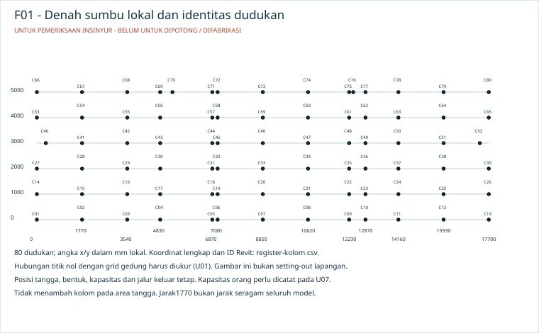
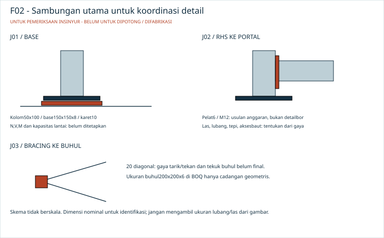
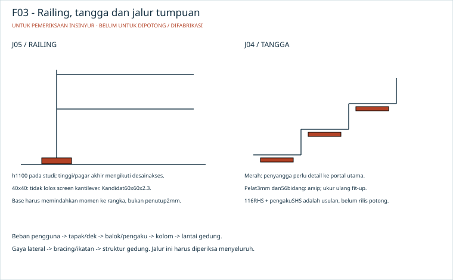

12 SEPTEMBER 2026 / R07
Dari pemeriksaan desain
ke fabrikasi dan serah terima.
UNTUK PEMERIKSAAN INSINYUR - BELUM UNTUK DIPOTONG / DIFABRIKASI
Pilihan Bam 1A / 2A / 3A. Pengisian catatan tidak menerbitkan persetujuan kerja.
01 / Dasar paket dan keputusan
Pilihan Bam:1 A/2 A/3 A. Bentuk, kapasitas dan posisi tangga model METTA tetap; profil dan sambungan boleh diperbaiki. Data lapangan belum lengkap. Insinyur struktur memeriksa sebelum fabrikasi.
R 07 adalah paket pemeriksaan menuju fabrikasi dan serah terima, bukan gambar yang telah disetujui untuk diproduksi. Jumlah pesanan final menunggu perubahan desain, pengukuran dan persetujuan tertulis.
Model kuantitas: pembacaan 545 elemen pada 11 September 2026;945 parameter cocok. Geometri penutup/pelat tangga masih arsip. Koordinat gambar memakai sumbu lokal tribun, bukan datum setting-out gedung.
Angka kapasitas orang tidak ditebak dari luas dek; pemilik/arsitek harus mencatat kapasitas yang disetujui tanpa menaikkannya.
02 / Putusan 54 atau 101 batang
54 batang adalah 1620 kg Excel/30 kg perbatang, bukan daftar potong.54 x 6 m hanya 324 m. Model RHS saja memerlukan 552,30 m dan pola 97 batang; model+usulan 590,14 m memakai pola 101 batang.97 dan 101 adalah pola layak, bukan minimum global terbukti.
Gunakan 101 hanya sebagai acuan anggaran lingkup lengkap saat ini. Jangan memesan 54 untuk memenuhi model ini. Jangan memotong 101 sebelum revisi sambungan/tangga/railing dikunci.
Berat katalog RHS 50 x 100 x 2,3:32,5 kg/6 m.30 kg dari Bam adalah pembagi Excel, bukan hasil timbang. Jika produk aktual berbeda, cocokkan sertifikat dan dimensi, lalu revisi berat dan analisis; jangan mengganti kg/batang saja tanpa pemeriksaan produk.
03 / Hitungan struktur dan keputusan profil
Acuan kerja pemeriksaan: RHS 50 x 100 x 2,3 dipertahankan untuk rangka utama. Pilihan 1,6 seluruh rangka tidak diteruskan sebagai desain pelaksanaan karena balok silang tidak lolos screen.2,0 memiliki margin lebih kecil; penghematan campuran tetap alternatif, bukan defaultfabrikasi.
Asumsi R 06: E 200000 MPa,Fy 235 MPa,Fu 370 MPa,D 1,5 k Pa,L 5 k Pa,faktor tebal 0,93 sebagai sensitivitas. Beban dan faktor tebal harus dikonfirmasi terhadap kategori penggunaan serta standar produk nyata.
Beam sederhana: Mu=qu L^2/8; Vu=qu L/2; delta=5 q L^4/(384 EI). Untuk titik: Mu=PL/4; delta=PL^3/(48 EI). Rasio adalah maksimum pemeriksaan kapasitas/lendutan yang dihitung. Sambungan/tumpuan ideal pada screen belum membuktikan kekakuan nyata.
Luasdek 82,35 m 2; D 123,52 k N; L 411,73 k N; kombinasi 1,2 D+1,6 L=806,98 k N untuk asumsi ini. Reaksi tidak boleh dibagi rata ke 80 dudukan.
Masih wajib diselesaikan: rangka 3 D/stabilitas/P-delta, gaya bracing dan diafragma, gempa LT 4, lantai/angkur beton, getaran global/ritmis, jalur beban tangga dan pagar. R 06 memuat hitungan lokal untuk bahan review; bukan sertifikat kepatuhan menyeluruh.
04 / Revisi kritis sebelum fabrikasi
Tiangrailing 40 x 40 tidak lolos screen kantilever 1,1 m, bahkan 2,8 mm.60 x 60 x 2,3 adalah kandidat lokal untuk dikaji, belum pengganti yang disetujui. Base, isian, railhorizontal, celah dan akses harus diperiksa bersama.
Jarak kolom tidak otomatis diubah 1770 menjadi 1000. Model memiliki jarak bervariasi sampai 2040 pada sumbu inti; infill dapat bertabrakan dengan tangga dan menambah tumpuan pada lantai. Bentuk/kapasitas tetap, revisi hanya setelah analisis dan cek lapangan.
Setiap perubahan profil/sambungan mengubah daftar bahan, panjang potong, kg dan harga. Paket ini mempertahankan BOQ acuan agar delta perubahan dapat ditelusuri, bukan menganggap semua item sudah cocok untuk fabrikasi.
05 / Daftar data lapangan
Isi formulir CSV atau kolom catatan di halamanweb. Lampirkan foto/sketsa dan identitas pengukur. Kolom kosong berarti belum ada bukti; mengisi formulir tidak menerbitkan persetujuan fabrikasi.
06 / Register detail sambungan
F 01-F 03 adalah gambar koordinasi revisi R 07. Detail kerja final harus menambahkan gaya desain, potongan, dimensi lubang/tepi, ukuran dan panjang las, gradebaut, metodekencang, toleransi, akses alat serta nomor revisi.
Tidak menetapkan ukuran las, torsi, panjang tanam angkur atau kapasitas lantai dari allowance harga. Insinyur/fabrikator menetapkannya dari desain dan data produk.
07 / Daftar bahan dan RAB sampai jadi
Daftar bahan/RAB disertakan perkomponen. Acuan RHS 2,3;SHS 2,0/2,8;stokpelat 120 x 240 cm. Kg baja 9570,466 mencakup usulan dan allowance. Total ini tidak mencakup kepastian biaya revisirailing/angkur atau penguatan lantai yang belum didesain.
Dua lingkup biaya ditampilkan untuk mencegah biaya pelengkap hilang. Semua nilai sebelum overhead,laba,pajak tambahan. Penawaran pemasok, transport/alatangkat aktual dan biaya pemeriksaan desain perlu dikonfirmasi; item yang belum berharga harus ditulis BELUM DIHARGAI, bukan dianggap nol.
Daftar potong memisahkan 245 potongan RHSmodel dari 116 usulan. Angka mm adalah panjang model, belum termasuk keputusan sambungan final. CSV memiliki kolom persetujuan yang kosong; bukan file CNC.
08 / Urutan pekerjaan dan titik pemeriksaan
Urutan berikut berbasis ketergantungan, bukan janji durasi. Durasi, jumlahpekerja, modul dan kapasitas alatangkat ditetapkan setelah U 08 dan gambar final. Modul panjang/berat tidak boleh diangkat atau ditumpuk di LT 4 tanpa rencana yang diperiksa.
09 / QC, serah terima dan penggunaan
Sebelum potong: cocokkan revisi, materialbatch, dimensi dan daftar potong. Saat fabrikasi: catat panjangakhir, orientasi, holepattern, prosedurlas, inspeksi dan perbaikan. Toleransi dan cakupan NDTditentukan dokumen desain/prosedur, bukan ditebak di lapangan.
Saat pemasangan: periksa dudukan/karet, leveling, bracingsementara, pengikat dan jalur tumpuan. Jangan melepaskan penahan sementara sebelum modul stabil dan diterima pengawas. Catat pemeriksaan baut sesuai jenis sambungan/metode pemasangan yang disetujui.
Sebelum serah terima: tutup temuan railing/tangga/antiselip/tepi tajam/akses, lengkapi as-built, daftar bahan aktual, logcat/las/baut, sertifikat, kapasitas penggunaan dan panduan perawatan. Uji pembebanan hanya jika ada prosedur tertulis dari insinyur; jangan memakai kerumunan sebagai uji.
Pemilik menetapkan penanggung jawab inspeksi berkala sesuai petunjukinsinyur/pemasok. Periksa kelonggaran, korosi, deformasi, retaklas, antiselip dan kerusakan kayu; hentikan penggunaan area bermasalah sampai diperiksa.
Pengesahan final harus memuat nama pemeriksa, revisigambar/hitungan, tanggal dan batas penggunaan. Status R 07 tetap UNTUK PEMERIKSAAN; formulir catatan tidak menggantikan pengesahan.
10 / Rujukan dan keterbatasan
Status katalog BSNdiperiksa 12 September 2026: SNI 1727:2020(beban),SNI 1729:2020(baja;adopsi AISC 360-16),SNI 7971:2013(baja canaidingin). Halaman katalog memastikan identitas/status, bukan akses seluruh pasal. Pilihan jalurdesain mengikuti standar produk aktual dan penanggung jawab desain.
Gempa SNI 1726 dan beton/angkur SNI 2847 harus dipakai sesuai edisi yang berlaku untuk proyek oleh insinyur. Data situs,kelas tanah,responsgedung LT 4,beton dan detailangkur belum tersedia.
R 06 tetap sumber hitungan lokal. Pembacaan ulang kuantitas 11 September tidak merupakan surveilapangan atau pemeriksaan mutu. Kg katalog/teoritis tidak sama dengan hasil timbang.
Gambar koordinasi R07
Unduh F01-denah
Unduh F02-sambungan
Unduh F03-railing-tangga
Catatan data lapangan
Tersimpan di perangkat ini; unduh catatan untuk dikirim kepada pemeriksa. Tidak ada perubahan status persetujuan.